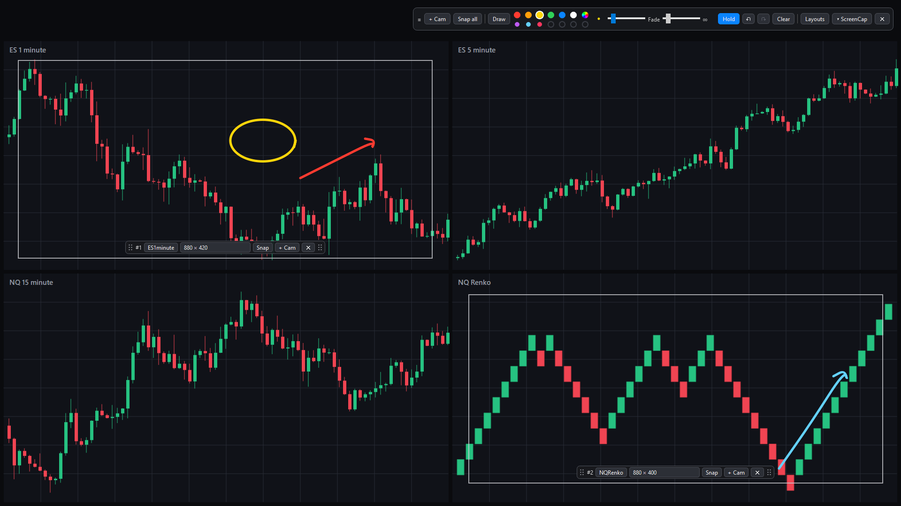
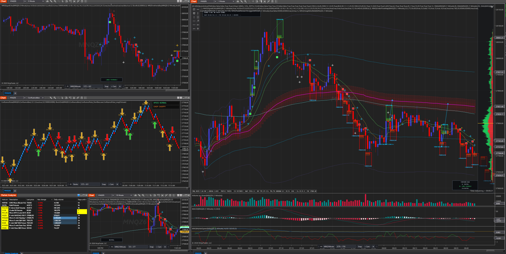
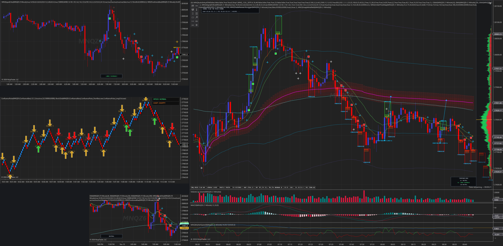
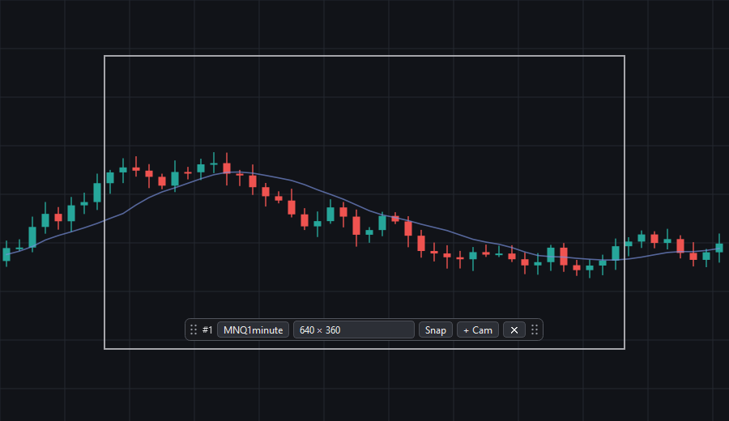
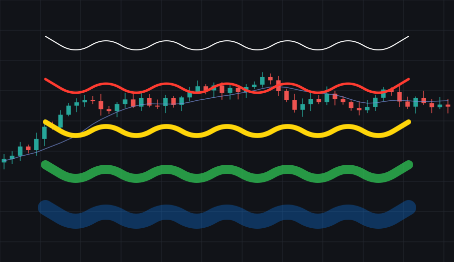
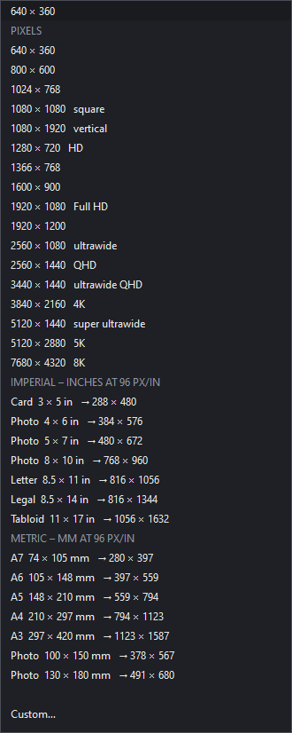

ScreenCap+
A lightweight Windows capture tool: park little camera frames on your screen, mark up what is under them, and save exact-size PNGs without ever freezing the display.
 $0.99 · Windows 10/11
$0.99 · Windows 10/11

One small toolbar
Drag it anywhere. It reopens where you left it, or returns to the top-right of the main display if that monitor is gone.
In use: a four-chart trading layout
Four named cameras parked over NinjaTrader charts: MNQ 1 minute, 5 minute, 15 minute and a Renko chart. The frames are thin enough to forget about; each bar only appears on hover.

One click, one stitched image
Snap all saves each camera as its own PNG, named after the camera, plus this combined image: the shots keep their on-screen arrangement and the dead space between them is squeezed out.

Layouts
Save the whole arrangement under a name and bring it back from the toolbar. Positions are stored per monitor, and camera names come back with it.

Cameras
- Hollow frames. Only a thin border exists, so you keep working inside the capture area.
- As many as you like. + Cam on any frame spawns another of the same size.
- Resize and move. Drag the border to resize; it turns magenta when grabbed. Drag the bar to move.
- Edges stick to screen and taskbar edges, and a frame cannot be pushed off the desktop.
- Named cameras. Give a camera a name such as MNQ1minute and its PNGs are saved under that name.
- Stitched shot. Snap all also saves one combined image, laid out as on screen with the empty space between cameras squeezed out.
- Layouts. Save the current cameras under a name and restore them later; positions are stored per monitor.
- Clean shots. The bar fades away when not hovered, and every border and bar is hidden at capture time.
- Snap one camera or Snap all; PNGs go to a folder and the last shot to the clipboard.

Marker
- Draw on anything across every monitor, then click through again the moment you switch it off.
- Fine point to thick marker: 1 to 40 px, six colours plus a colour wheel that remembers your last seven picks.
- Fade slider: strokes disappear after 1 to 30 seconds.
- Hold keeps them until you press Clear.
- Undo and redo one stroke at a time, newest first, on every monitor: right-click, the ↶ ↷ buttons, or the hotkeys.
- Strokes are part of the capture, so annotations are saved with the shot.

Exact sizes
- Pixel presets from 640 × 360 up to 8K, including square, vertical and ultrawide.
- Imperial: photo sizes, Letter, Legal and Tabloid in inches.
- Metric: A7 to A3 and photo sizes in millimetres.
- Custom width × height in pixels.
- Inch and mm sizes convert at 96 px per inch.
Hotkeys
Work from any application. Every action is listed with its hotkey in the ▾ menu at the right end of the toolbar (also on the tray icon), and Keyboard shortcuts… there lets you change any of them.
Snap all cameras
Toggle the marker
Clear the marker
Undo the last stroke
Redo a stroke
Leave draw mode
Privacy: we collect nothing
ScreenCap+ has no accounts, analytics, telemetry or ads, and never connects to the internet. Captures go only to the folder you pick, settings stay on your PC. Read the privacy policy.
Get ScreenCap+
$0.99 on the Microsoft Store. Updates install automatically. Questions? Get support.